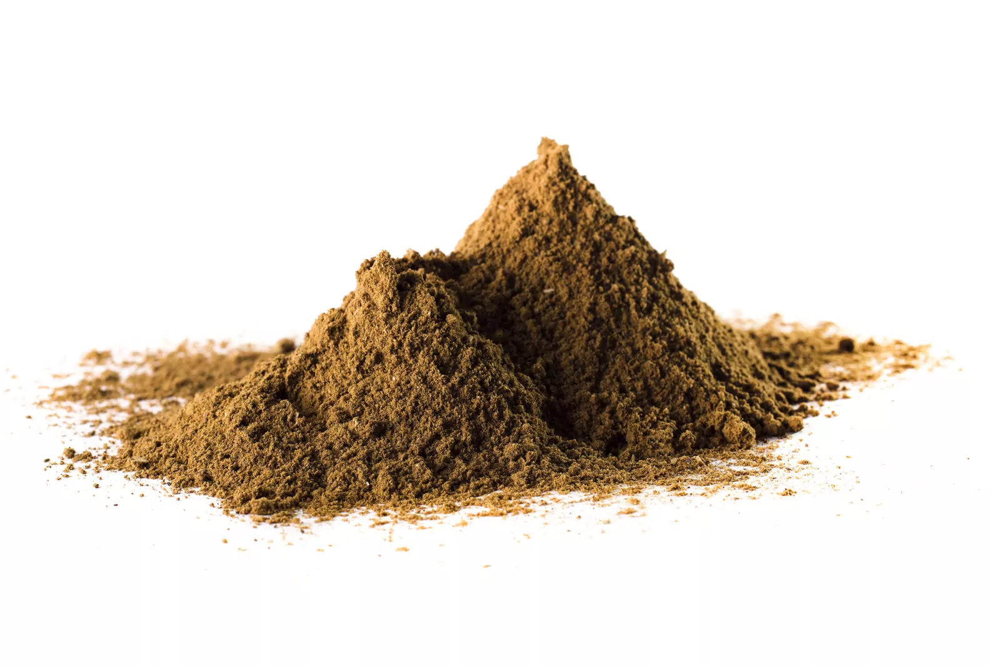

La Harina de Pescado de alta calidad, es obtenida a partir de materias primas provenientes de las especies “Monterrey, Macarela, Anchoveta, Crinuda, Bocona & Japonesa”. El producto obtenido pasa por un proceso de cocción, prensado, secado a vapor y molienda. PRESENTACIÓN: Envase - Saco de Harina de 40 - 40.5 Kg.